This is user-stories.md rendered as the built product: the consultant who produces a Land Quality method statement and gets it accepted, and the client lead reviewer who runs the review and accepts it. Every screenshot is the real application, driven live through the whole cycle on the seeded Wrenfield world — nothing is a mockup. Where the written story runs ahead of the build, the beat is flagged designed, not yet surfaced and points at its ticket.
Captured 2026-08-09 against the e2e substrate (deterministic model providers, seeded corpus). The companion piece user-stories-graphic.html tells the same two journeys as a decision map; this page shows them as screens.
Environmental consultant and lead author at Calder & Hale, the appointed consultancy. Drafts, promotes, answers the review.
Lead reviewer at Trentmoor Energy, the owner. Runs the review group, moderates, and holds the accepting code.
EIA Scoping Method Statement — Land Quality, on the Wrenfield–Ashcombe 400kV Connection. Planned, produced, reviewed and accepted below.
Nothing in this journey starts with a blank page or an invented filename. The deliverable, its reference, its authors and its reviewers were all settled when the plan was built — the work starts by picking up what the plan already holds.
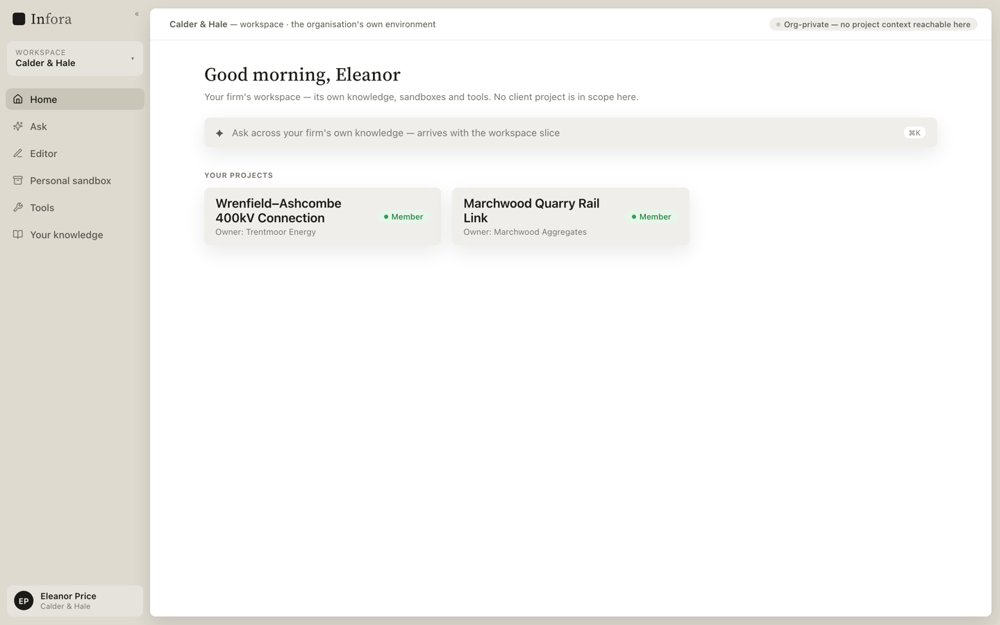
Eleanor Price signs in at Calder & Hale and lands on her workspace: the Wrenfield–Ashcombe 400kV Connection, owned by Trentmoor Energy. Three organisations work this project; everything that follows happens inside it, and the wall decides what each of them sees.
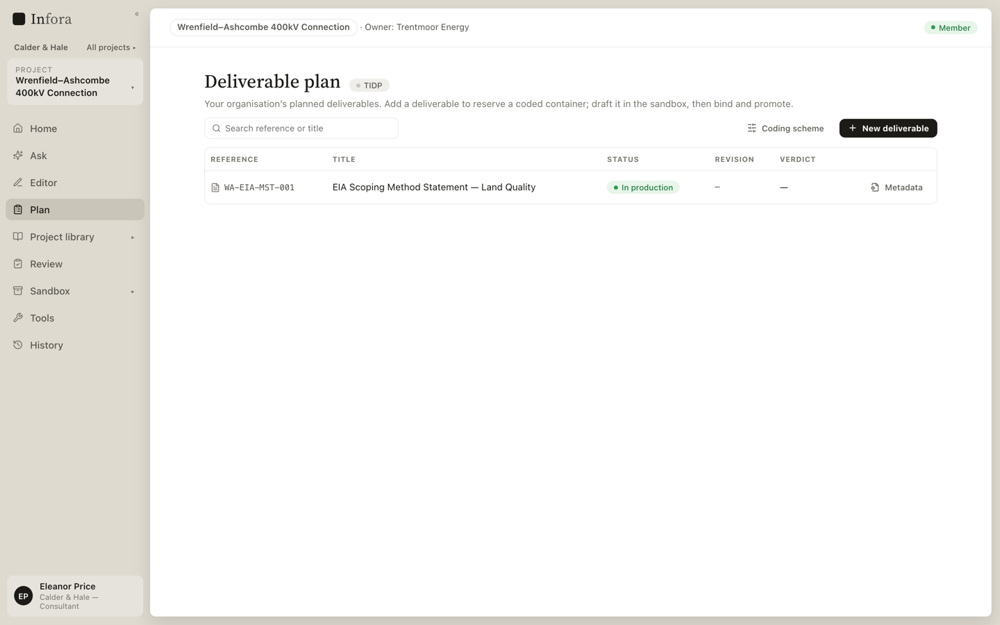
WA-EIA-MST-001 — EIA Scoping Method Statement, Land Quality. The reference was generated from the project’s naming rules the moment the row was created, and the reviewers were named on it. Eleanor did not invent a name and does not decide who reviews her work; that was settled in the plan.
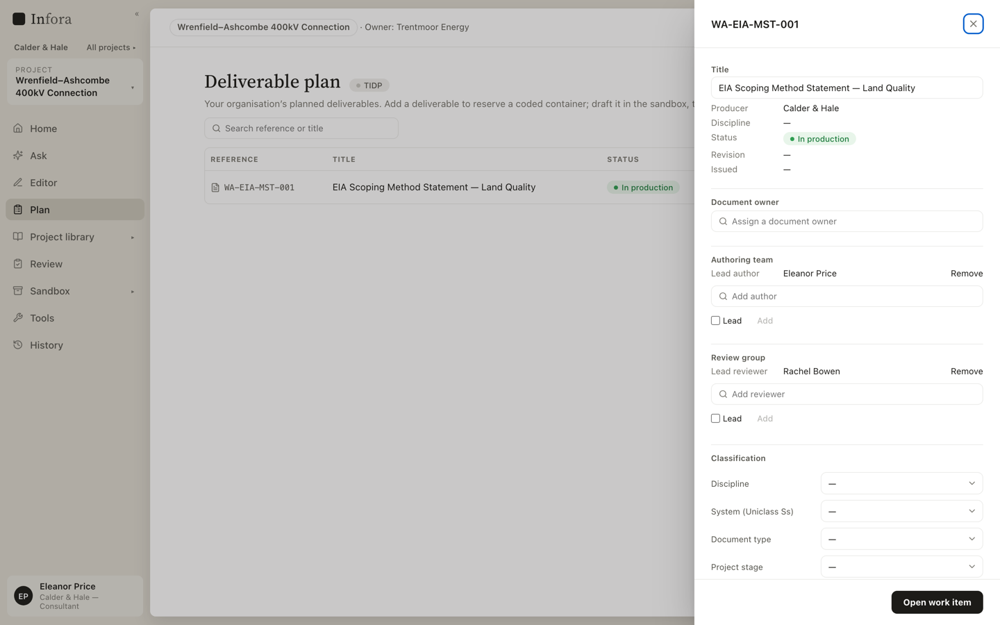
The row’s detail: producer, discipline, revision state, the authoring team, and the review group. Rachel Bowen was proposed as lead reviewer by the producing side and confirmed by the owner — and access follows confirmation, never proposal.
Working drafts live in the producing organisation’s private sandbox. They never leak into anyone’s answers, and the v0.x working series never leaves — what the other organisations eventually see is a frozen, promoted revision.
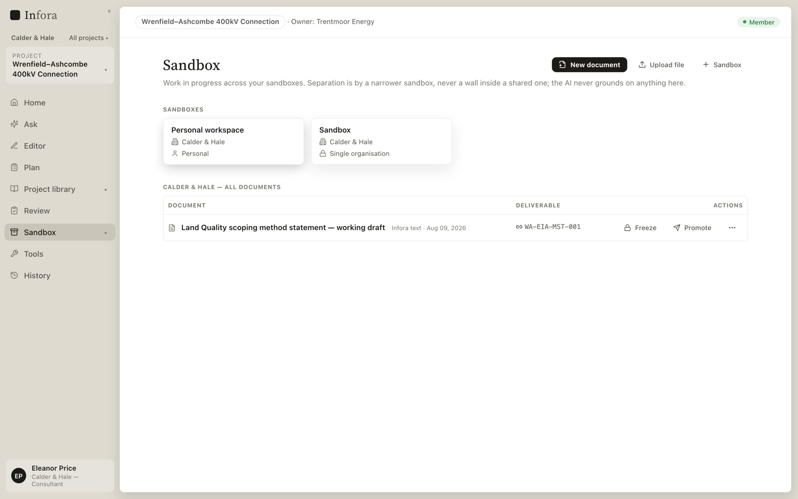
Eleanor drafts in Calder & Hale’s sandbox. The working document is bound to the container that has been waiting for it since the plan was built, so promotion later carries no retyping — the metadata and the reference are already on the container.
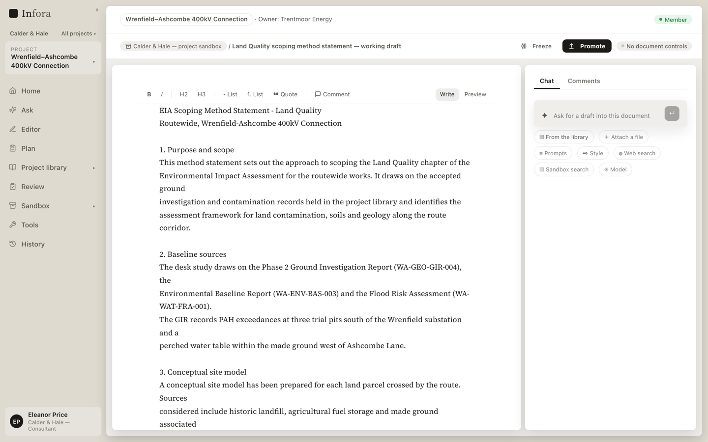
The draft in the Editor, the drafting assistant alongside. Its reach is the project library — the curated set of accepted material the owner trusts — so the text it helps produce is anchored to the project’s real positions, not to whatever half-finished files are lying around.
Promotion freezes an immutable P-revision, generates the PDF that will be reviewed, keeps the native file in the same container, and opens the round. From that moment the review belongs to the review group — and the authoring side sees none of it until the lead issues.
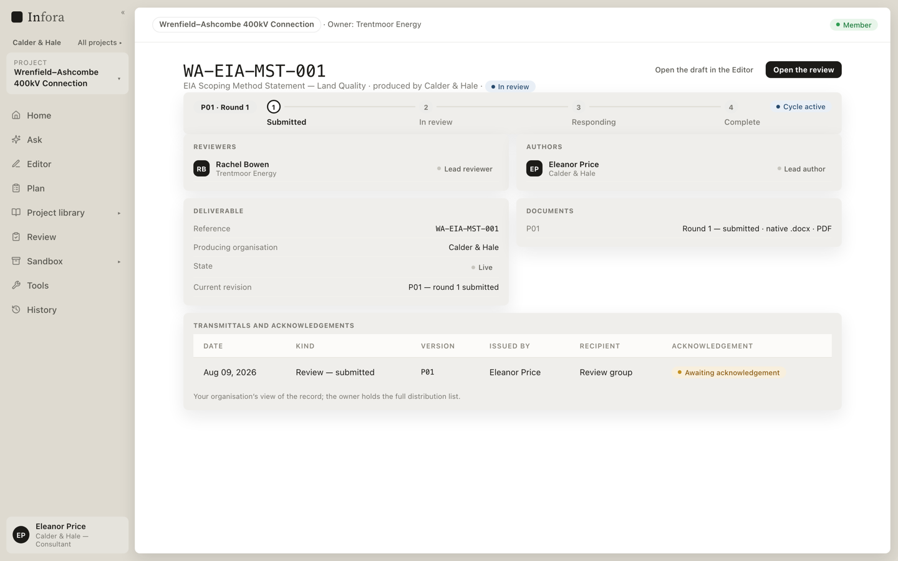
Promotion is almost nothing for Eleanor — one act, no form. Infora freezes P01, renders the review PDF beside the native file, and submits round 1 to the owner side. The four-state bar says exactly where the deliverable stands; the pen is with the review group.
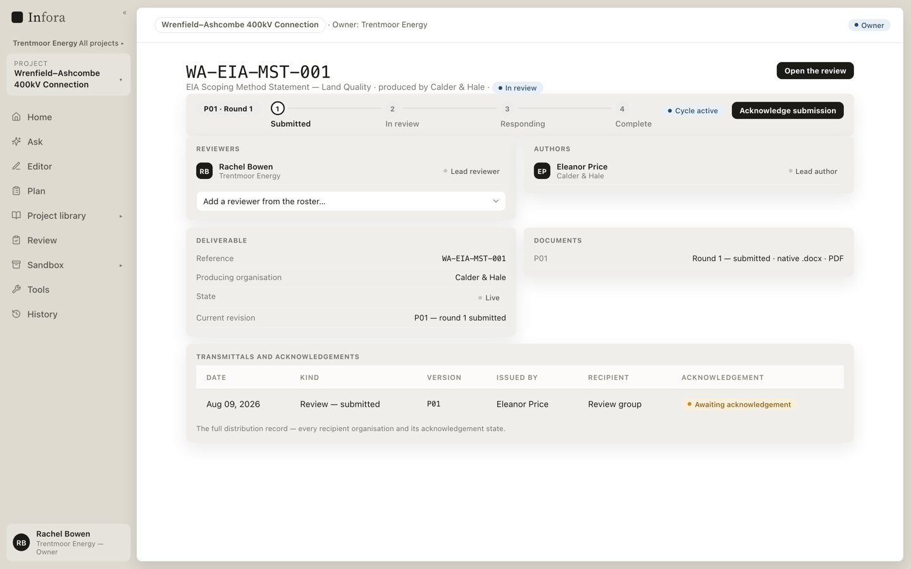
Rachel was named lead reviewer in the plan, so the submission arrives to her. Acknowledging it opens the round for the review group — a recorded receipt with a name on it, not a formality, and any confirmed reviewer of the deliverable can fire it.
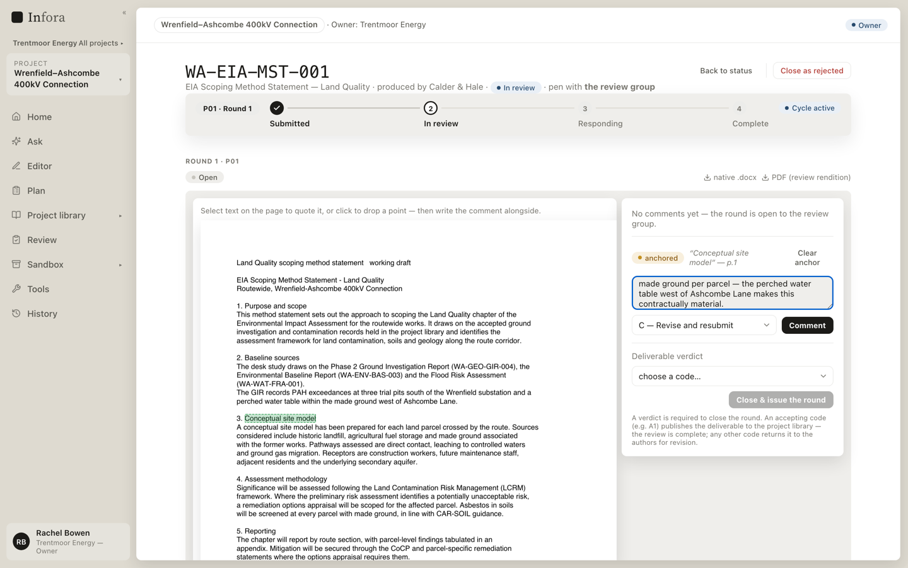
Rachel selects the text she means on the P01 PDF and writes the comment alongside, coded on the project’s acceptance scheme. The anchor — page, quote, quads — is stored on the comment itself, bound to the immutable version, never a sidecar file.
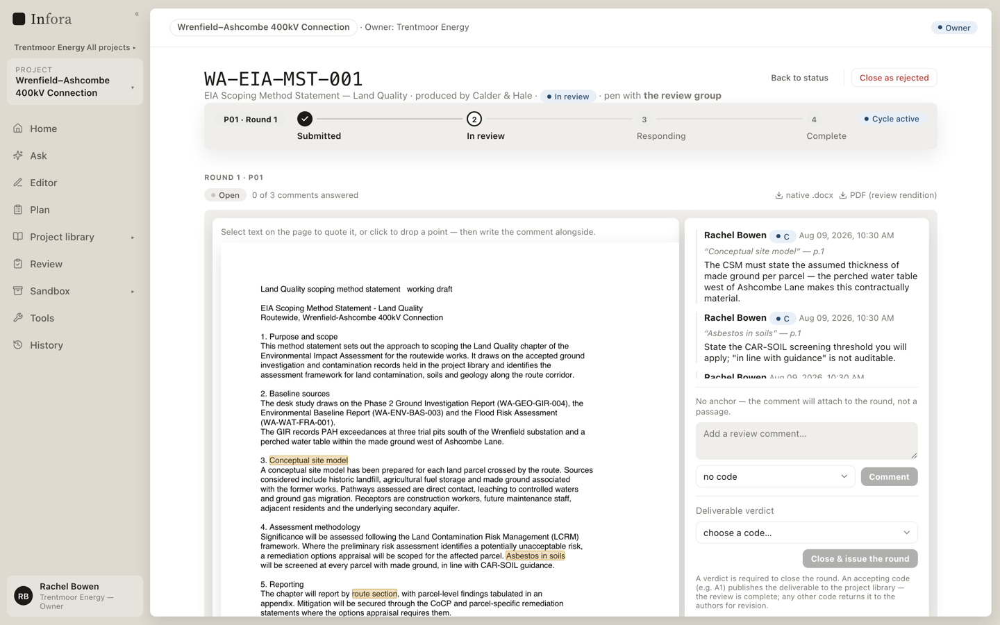
Three comments, each pinned to the exact place it refers to, each coded, all landing in one record the whole review group sees as it is written — across organisations. Nobody is assembling a spreadsheet, and nobody is guessing what “page three, paragraph four” refers to.
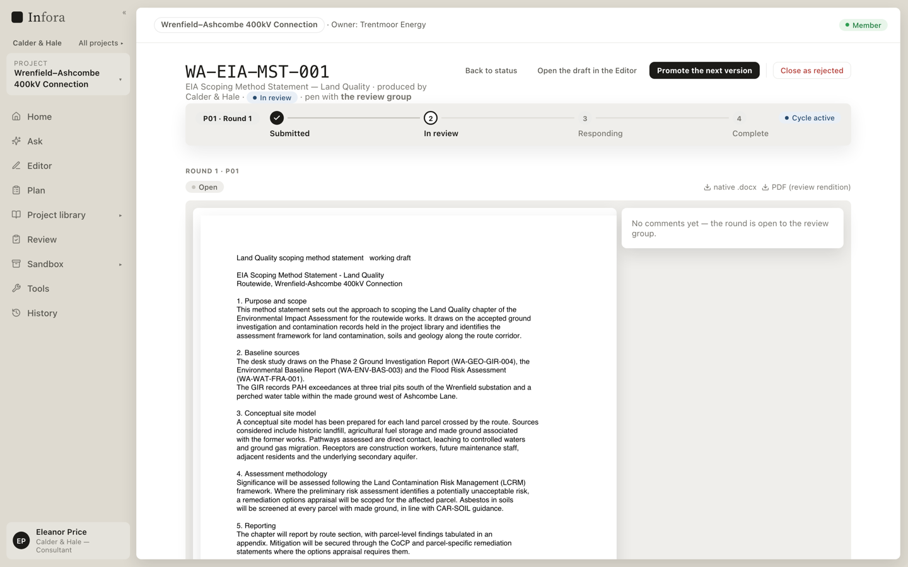
While the round is open, Eleanor sees the round exists and nothing of its content. The open round’s comments are reviewer-side state, withheld until the lead issues — enforced in the server’s read, not by the client hiding fields.
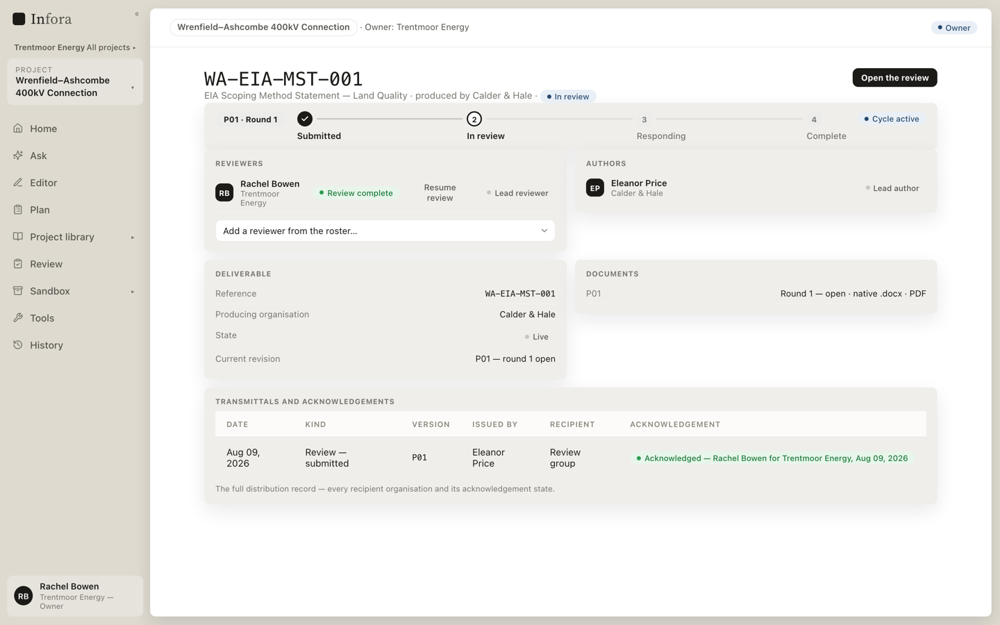
“Review complete” is a stored, round-scoped signal — a reviewer with nothing to say is done, not absent. The set freezes when the round issues, and no count of completions closes anything: closing stays the lead’s human act.
Closing the round is a verdict, not a timeout. The record is issued to the consultant, and version two cannot leave until every comment carries a response — a change declared in the next revision, or an explicit no-change with a reason. There is no third state.
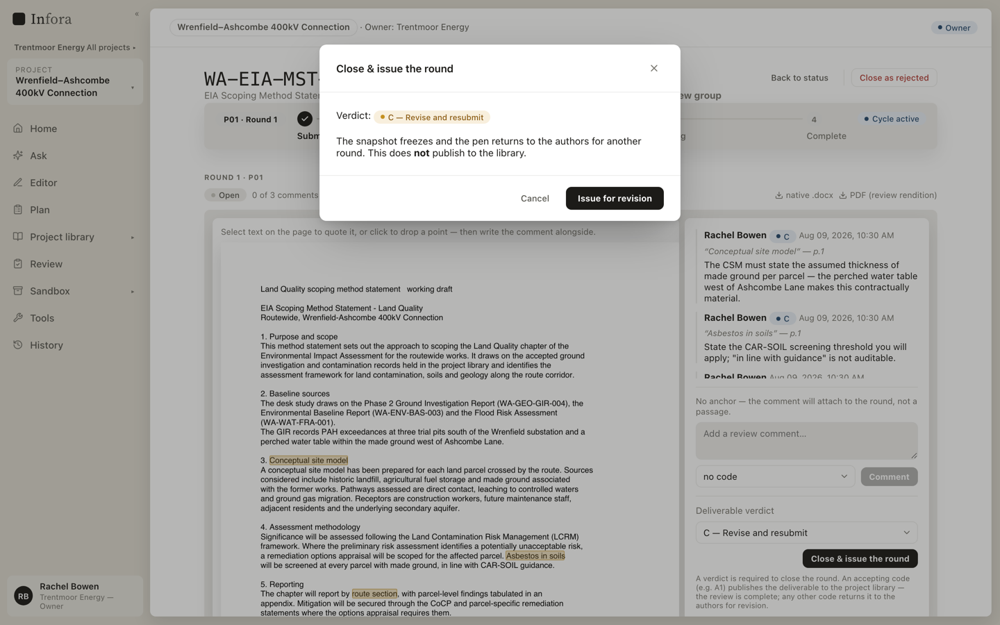
Rachel sets the deliverable verdict — C, revise and resubmit — and closes the round. The review snapshot freezes on the record, the transmittal issues it to the authoring side, and only now does Calder & Hale see the comments.
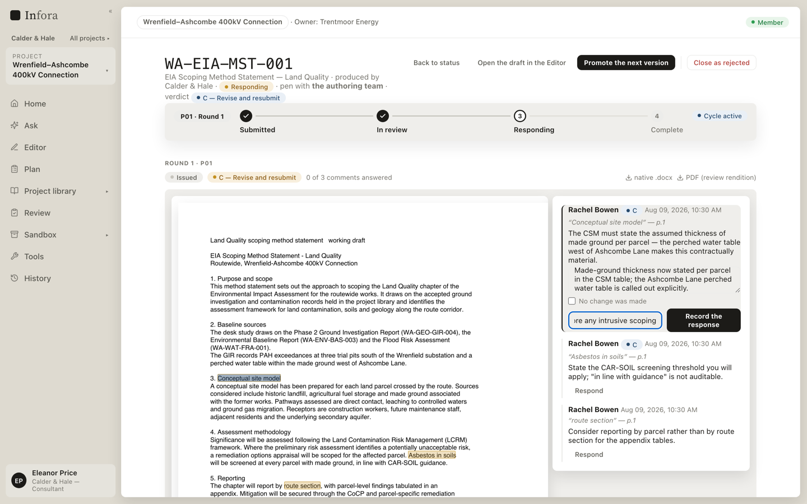
For each comment Eleanor writes a response and declares the revised passage that answers it. The version that passage lands in does not exist yet — promotion is gated on the responses — so the link is declared now and the system stamps the version id when promotion creates it (T-354, fixed during this review).
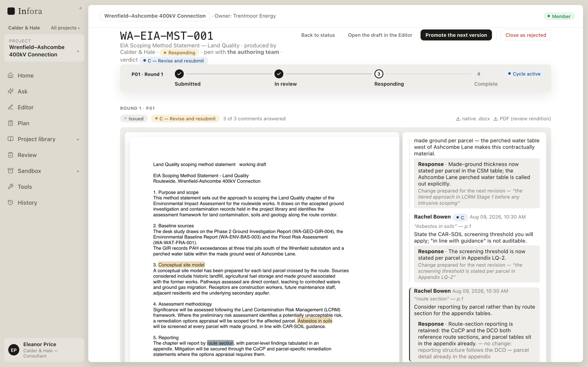
Two changes declared, one explicit no-change with its reason on the record — the route-section point is reconciled by hand, not merged silently. Promote refuses while any comment is unanswered; the mandatory-response rule bites the transmittal back, not a dialog.
An accepting code is the contractual act: the work item closes, the accepted revision becomes the controlled record, and the deliverable passes into the project library — from now on it is part of what the project treats as true, and retrieval grounds on it.
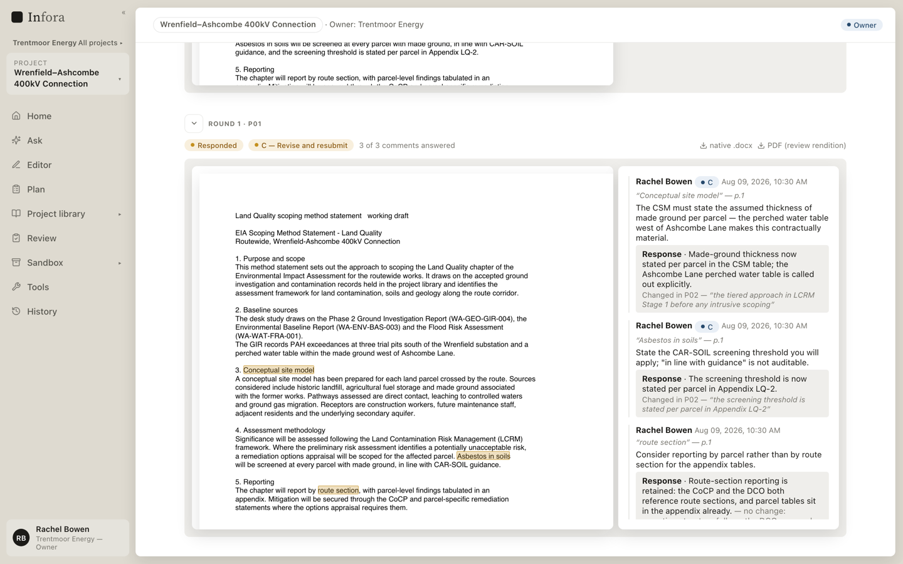
Rachel does not go hunting for what changed. Each response sits beside her comment in the same record, stamped “Changed in P02” with the passage that answers it; the no-change answer states its reason. Round 1 stands as the record it was; round 2 opens on the new version.
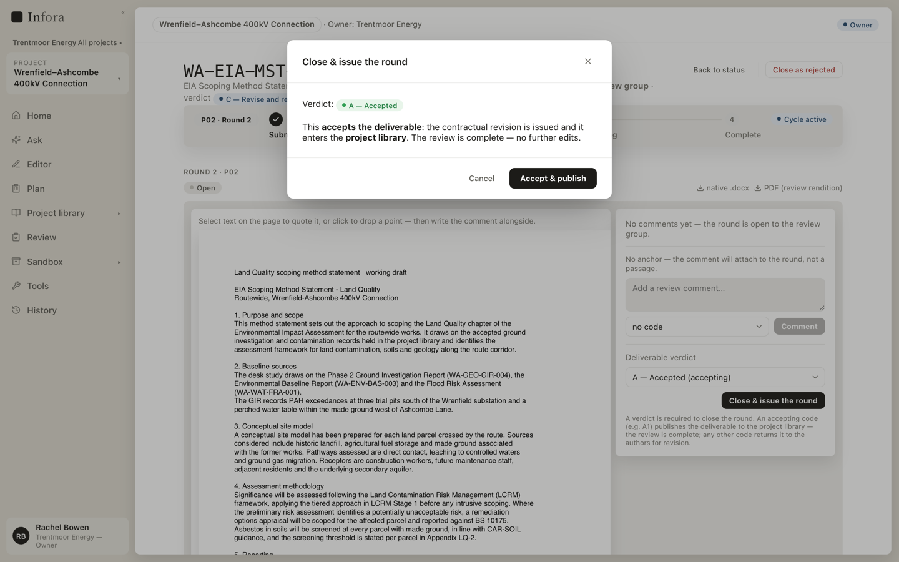
The chapter meets the standard the client is paying for. The modal says exactly what the accepting code does before Rachel commits it: the contractual revision is issued, the deliverable enters the project library, the review is complete — no further edits.
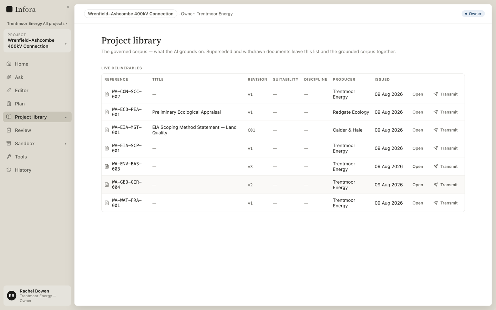
WA-EIA-MST-001, revision C01, live in the project library beside the ground investigation and baseline reports it was drafted from. It is now project knowledge: the drafting assistant grounds on it, citations resolve into it, and the wall still decides who reaches it.
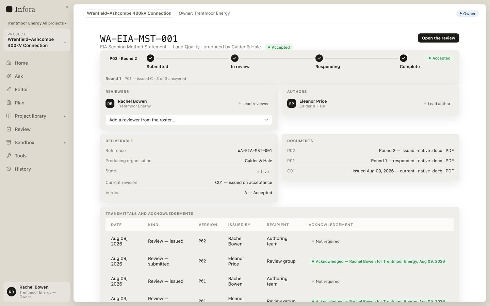
Submitted, in review, responding, complete. The work item is closed and the cycle ran to acceptance without a review spreadsheet, a chased document controller or an emailed comment sheet anywhere in it.